チュートリアル概要 :
このチュートリアルでは、Stack Monitoring を使用して BaseDB のメトリック監視を有効化するまでのステップをご紹介します。
所要時間 : 約60分
前提条件1 : テナンシ上で以下のリソースが作成済であること
- コンパートメント
- ユーザー
- ユーザーグループ
- VCN
- BaseDB
前提条件2 : Stack Monitoringが有効化済みであること
こちらを参考にStack Monitoringを有効化できます。
1. 管理エージェントのインストール
Stack Monitoring でモニターするメトリック情報は管理エージェントにより取得されるので、OCIコンソールから管理エージェントをダウンロードし管理エージェントをBaseDBにインストールします。
1.1 管理エージェントのインストール
OCIコンソールの画面左上ハンバーガーメニューから「監視および管理」を選択し、以下のように進んでください。
- 管理エージェント > ダウンロードとキー
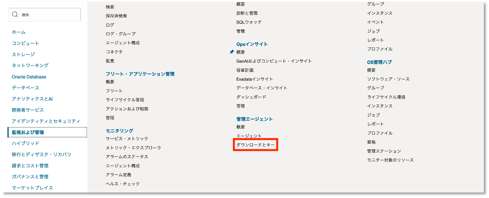
LINUXのエージェント（X86_64）をダウンロードします。
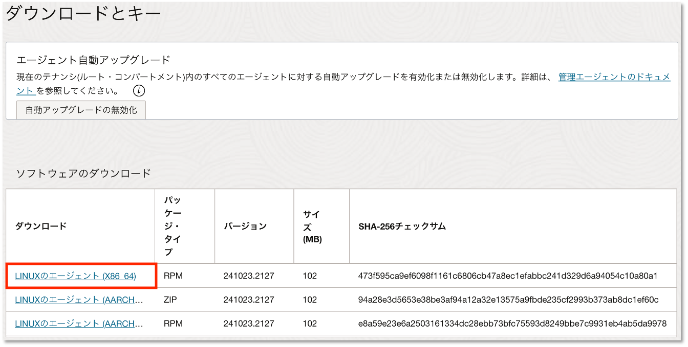
インストールに必要なキーを作成します。 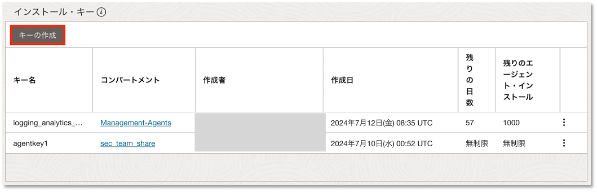
下記の情報を設定し、「作成」をクリックします。
- キー名：任意の名前
- コンパートメント：任意のコンパートメント
- 最大インストール：任意の値
- 有効期限：任意の期間 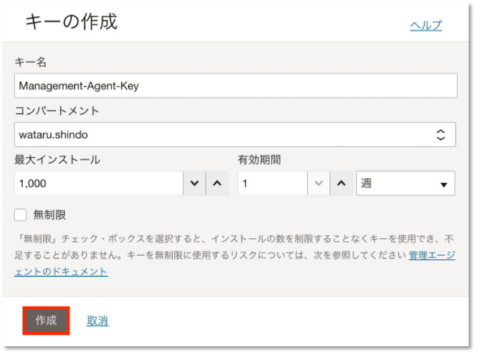
3点リーダーから「キーをファイルにダウンロード」をクリックして作成したキーをダウンロードします。
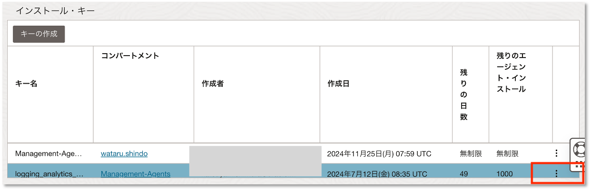 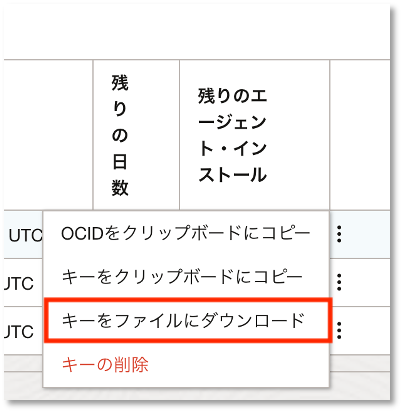
JDK8のインストール
管理エージェントのインストールにはJDK8が必要なのでインストールされていない場合はこちらからLinux版のJDKをダウンロードして、インストールします。
SSHでBase DBにログインします。
$ ssh –i .ssh/<SSH秘密鍵> opc@<BaseDBのIPアドレス>
ダウンロードしたRPMファイルを使用して、JDK8をインストールします。
$ sudo rpm -ivh jdk-8u401-linux-x64.rpm
Java Homeを設定します。
$ JAVA_HOME=/lib/jvm/jdk-1.8-oracle-x64 ; export JAVA_HOME
1.2 管理エージェントのインストール
ダウンロードしたRPMファイルをSCPなどで/home/opcに配置して、管理エージェントをインストールします。
$ sudo rpm - ivh oracle.mgmt_agent.xxxx.xxxx.Linux-x86_64.rpm --preserve-env=JAVA_HOME
ファイル名について
PRMのファイル名は前手順でダウンロードしたファイル名に合わせます。
レスポンスファイル（input.rsp）に前手順でダウンロードしたキーの内容を貼り付けます。
$ sudo vi /opt/oracle/mgmt_agent/agent_inst/bin/input.rsp
作成したレスポンスファイルを使用して、setupスクリプトを実行します。
$ sudo /opt/oracle/mgmt_agent/agent_inst/bin/setup.sh opts=/opt/oracle/mgmt_agent/agent_inst/bin/input.rsp
2.プラグインの有効化
管理エージェントがStack Monitoringにメトリック情報をアップロードできるように管理エージェントのプラグインを有効化します。 OCIコンソールの画面左上ハンバーガーメニューから「監視および管理」を選択し、以下のように進んでください。
- 管理エージェント > エージェント 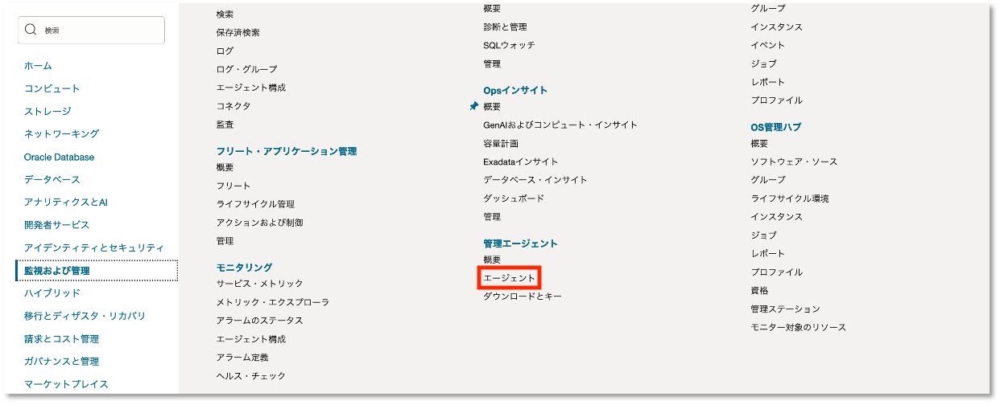
エージェントが有効になると可用性にアクティブと表示されます。 有効化した管理エージェントをクリックします。 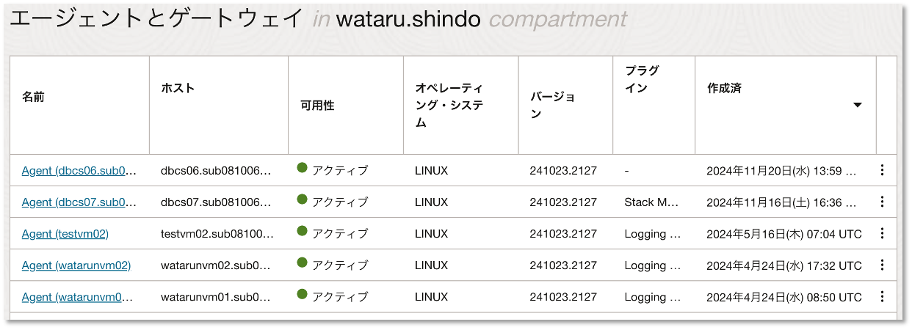
「プラグインのデプロイ」をクリックします。 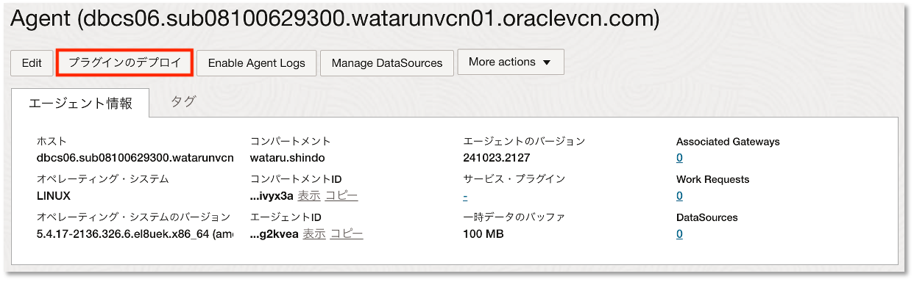
Stack Monitoringを選択し、「更新」をクリックします。 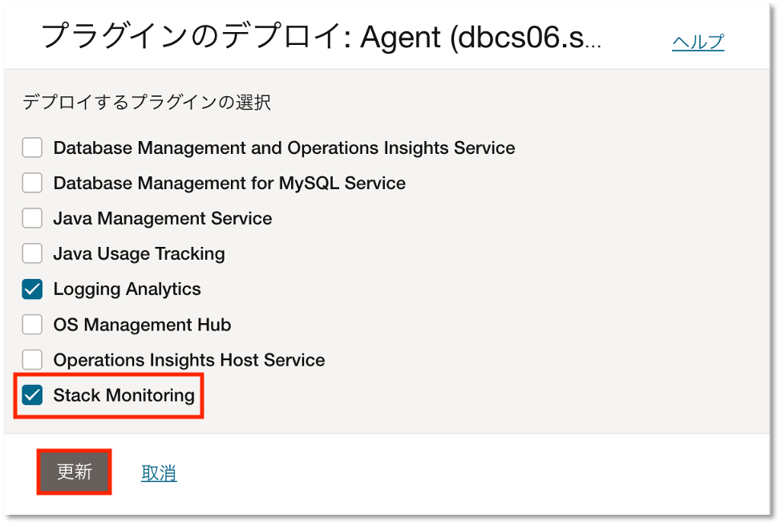
3. 動的グループの作成
ユーザとサービスへのポリシー作成に必要な動的グループを作成します。 OCIコンソールの画面左上ハンバーガーメニューから「アイデンティティとセキュリティ」を選択し、以下のように進んでください。
- アイデンティティ > ドメイン
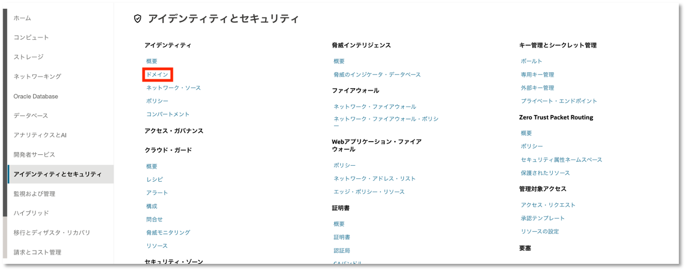
任意のドメインをクリックします。
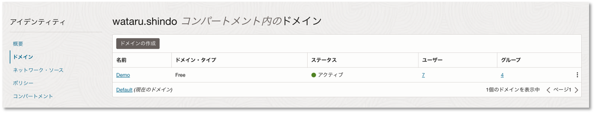
「動的グループの作成」をクリックします。 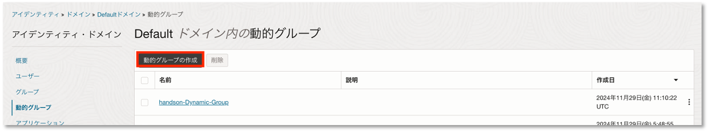
下記の情報を設定し、、「作成」をクリックします。
- 動的グループ名：任意の動的グループ名
- 説明：任意の説明
- 一致ルール：下に定義したいずれかのルールに一致
- ルール1には以下のステートメントを記入します。 “ocid1.compartment.oc1.examplecompartmentid”は、監視対象のデータベースが配置されているコンパートメントのOCIDに置き換えてください。
ALL {resource.type='managementagent', resource.compartment.id='ocid1.compartment.oc1.examplecompartmentid'}
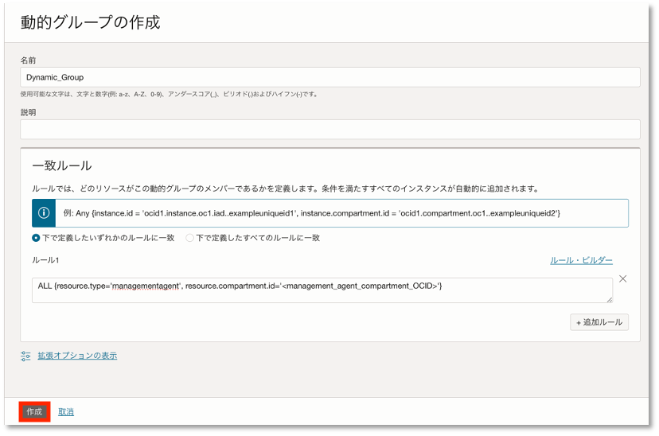
4. IAMポリシーの作成
ユーザとサービスへのポリシーを作成します。 OCIコンソールの画面左上ハンバーガーメニューから「アイデンティティとセキュリティ」を選択し、以下のように進んでください。
- アイデンティティ > ポリシー
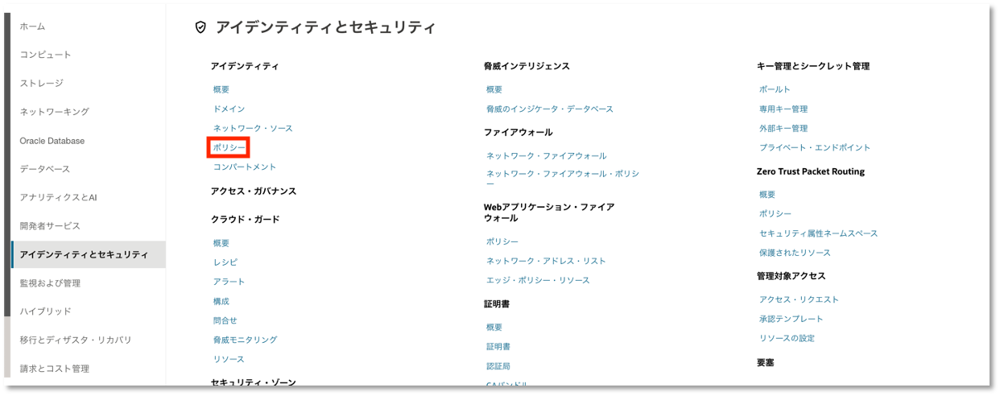
「ポリシーの作成」をクリックします。 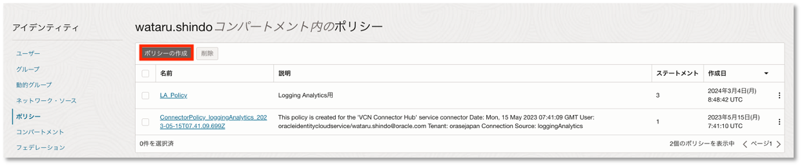
下記の情報を設定し、「作成」をクリックします。
- ポリシー名：任意のポリシー名
- 説明：任意の説明
- コンパートメント：ルートコンパートメントを推奨
- ポリシー・ビルダーで「手動エディタの表示」をONにして、以下のステートメントを記入します。 <compartment name> は、監視対象のコンパートメント名に置き換えてください。
allow dynamic-group Management_Agent_Dynamic_Group to use metrics in compartment <compartment name> where target.metrics.namespace = 'oracle_appmgmt'
allow dynamic-group Management_Agent_Dynamic_Group to {STACK_MONITORING_DISCOVERY_JOB_RESULT_SUBMIT} in compartment <compartment name>
ALLOW SERVICE appmgmt TO {STACK_MONITORING_DISCOVERY_JOB_CREATE,STACK_MONITORING_WORK_REQUEST_READ,STACK_MONITORING_CONFIG_INSPECT} IN COMPARTMENT<Compartment Name>
ALLOW SERVICE appmgmt TO {MGMT_AGENT_DEPLOY_PLUGIN_CREATE, MGMT_AGENT_INSPECT, MGMT_AGENT_READ} IN COMPARTMENT<Compartment Name>
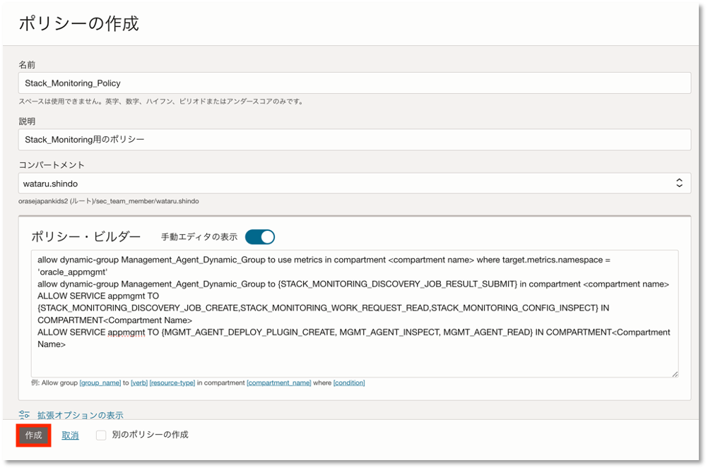
ユーザーへのポリシー割り当てについて
このチュートリアルでは、管理者ユーザーを前提としているため、必要最低限のポリシーのみ作成しています。
ユーザーごとに権限を制御する場合はこちらを参考に設定してください。
5. ホストのメトリックを可視化
Stack Monitoringでホストのメトリックを可視化します。 OCIコンソールの画面左上ハンバーガーメニューから「監視および管理」を選択し、以下のように進んでください。
- アプリケーション・パフォーマンス・モニタリング > スタック・モニタリング
リソースの「リソースの検出」をクリックします。
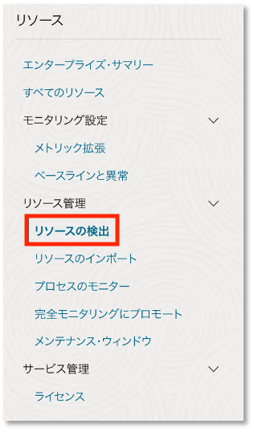
新しいリソースの検出をクリックします。 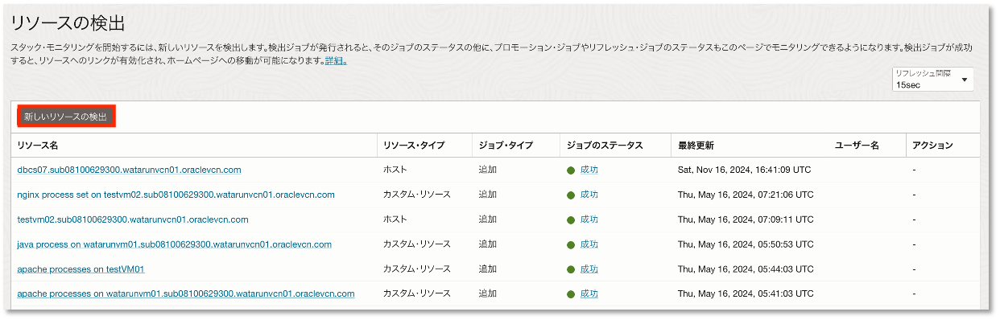
下記の情報を設定し、「新しいリソースの検出」をクリック
- リソースタイプ：ホスト
- リソース名：任意の名前
- 管理エージェント：インストールした管理エージェントを選択
- 検出場所：スタック・モニタリングのみ
- ライセンス：任意のライセンス
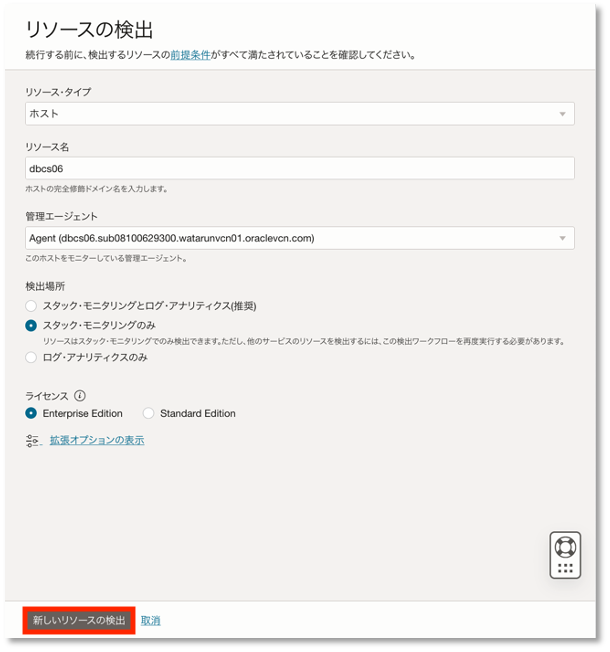
ライセンスについて
ライセンスによる機能の違いについてはこちらをご確認ください。
検出場所について スタック・モニタリングとログ・アナリティクスを選択するとLogging Analyticsでログを収集するときに必要になるエンティティの作成を同時にできます。
メトリックが収集されているか確認します。
リソースの「すべてのリソース」をクリックします。
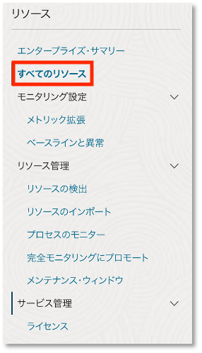
監視対象のリソース名をクリックします。 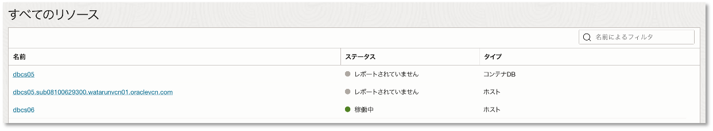
設定が完了すると数分でメトリックが表示されます。 表示されるメトリックについてはこちらをご確認ください。 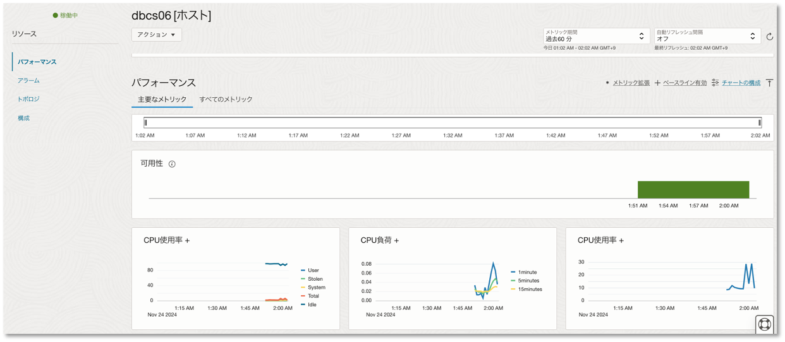
6. インスタンス（CDB）のメトリックを可視化
Stack Monitoringでインスタンス（CDB）のメトリックを可視化します。
リソースの「リソースの検出」をクリックします。
新しいリソースの検出をクリックします。
以下の情報を設定し、「新しいリソースの検出」をクリックします。
- リソースタイプ：Oracle Database
- リソース名：任意の名前
- DNS名ホスト名またはSCAN名：データベースのホスト名
- ポート：1521
- サービス名：データベースのサービス名
- 管理エージェント：インストールした管理エージェントを選択
- ユーザ名：任意のデータベース・ユーザー
- パスワード：データベース・ユーザーのパスワード
- ロール：NORMAL
- 検出場所：スタック・モニタリングのみ
- ライセンス：任意のライセンス
- 自動ストレージ管理：無効
ロールについて
データベース・ユーザーに該当するロールを選択します。
※SYSユーザーの場合はSYSDBA
自動ストレージ管理について
ASM関連のメトリックを表示させる場合は、「有効」を選択し必要な情報を設定します。
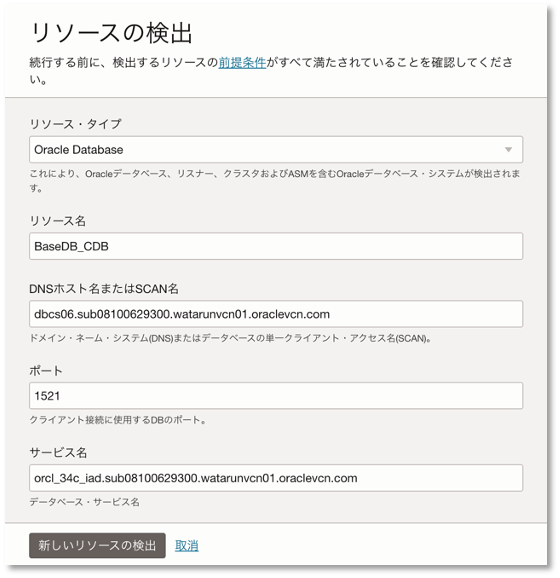 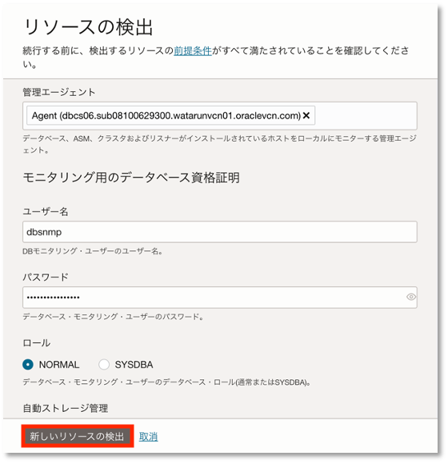
メトリックが収集されているか確認します。
リソースの「すべてのリソース」をクリックします。

監視対象のリソース名をクリックします。

設定が完了すると数分でメトリックが表示されます。 表示されるメトリックについてはこちらをご確認ください。 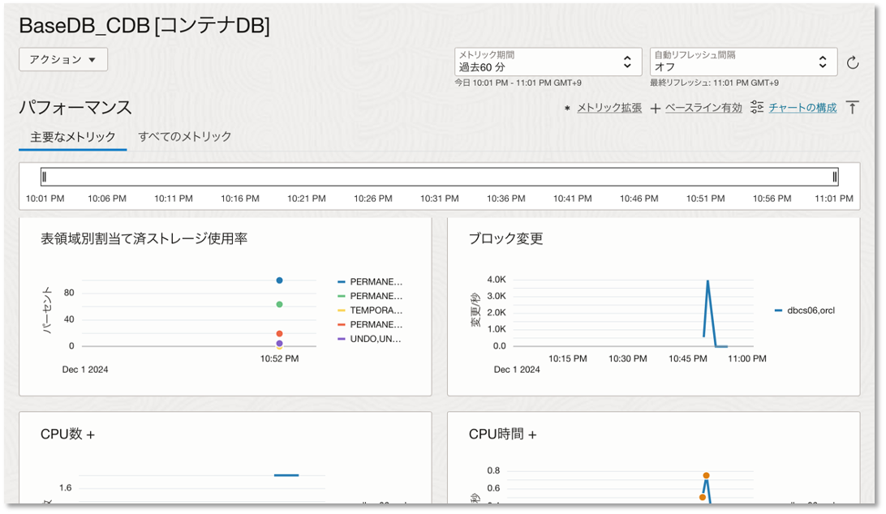
7. インスタンス（PDB）のメトリックを可視化
Stack Monitoringでインスタンス（PDB）のメトリックを可視化します。
リソースの「リソースの検出」をクリックします。
新しいリソースの検出をクリックします。
以下の情報を設定し、「新しいリソースの検出」をクリックします。
- リソースタイプ：プラガブルDB
- リソース名：任意の名前
- CDBの選択：前手順で有効化したCDBを選択
- DNS名ホスト名またはSCAN名：データベースのホスト名
- ポート：1521
- サービス名：データベースのサービス名
- 管理エージェント：インストールした管理エージェントを選択
- ユーザ名：任意のデータベース・ユーザー
- パスワード：データベース・ユーザーのパスワード
- ロール：NORMAL
- 検出場所：スタック・モニタリングのみ
- ライセンス：CDBで選択したライセンスが自動適用されます。
メトリックが収集されているか確認します。
リソースの「すべてのリソース」をクリックします。
監視対象のリソース名をクリックします。 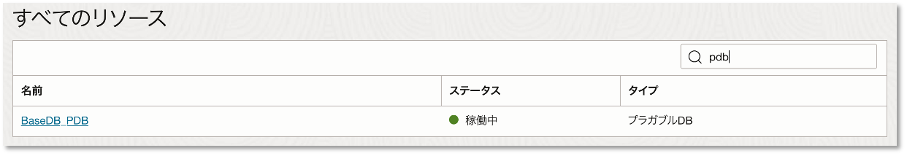
設定が完了すると数分でメトリックが表示されます。 表示されるメトリックについてはこちらをご確認ください。 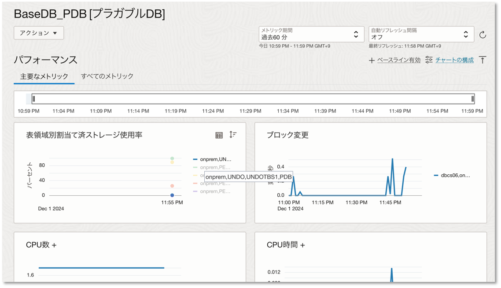
8.アラームの作成
これらのメトリックは Monitoring に連携しているため、シンプルな手順でアラームの通知設定を作成できます。 アラームを作成することで、メトリックの値が特定のしきい値に達したらアラームを発報してメール等でユーザーに通知が可能です。 Stack Monitoringで監視しているデータベース・ホストのメトリックは、oracle_appmgmt、データベース・インスタンスのメトリックはoracle_oci_databaseを使用することでアラームを設定することができます。
詳細のアラーム作成手順についてはこちらをご確認ください。